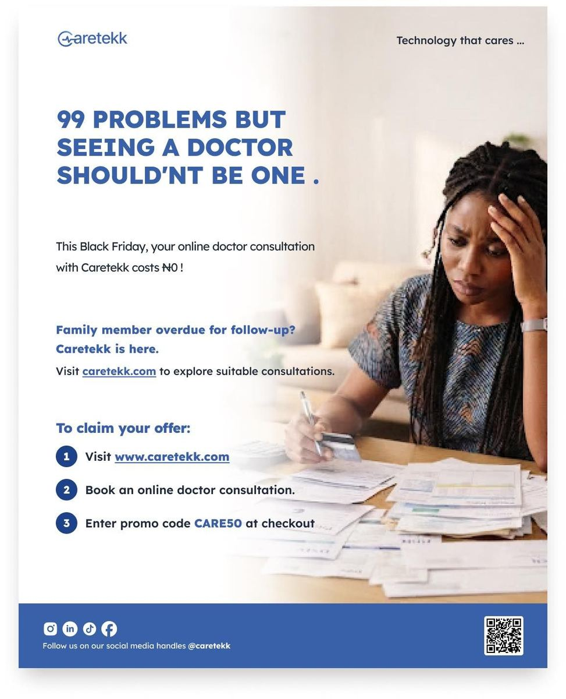
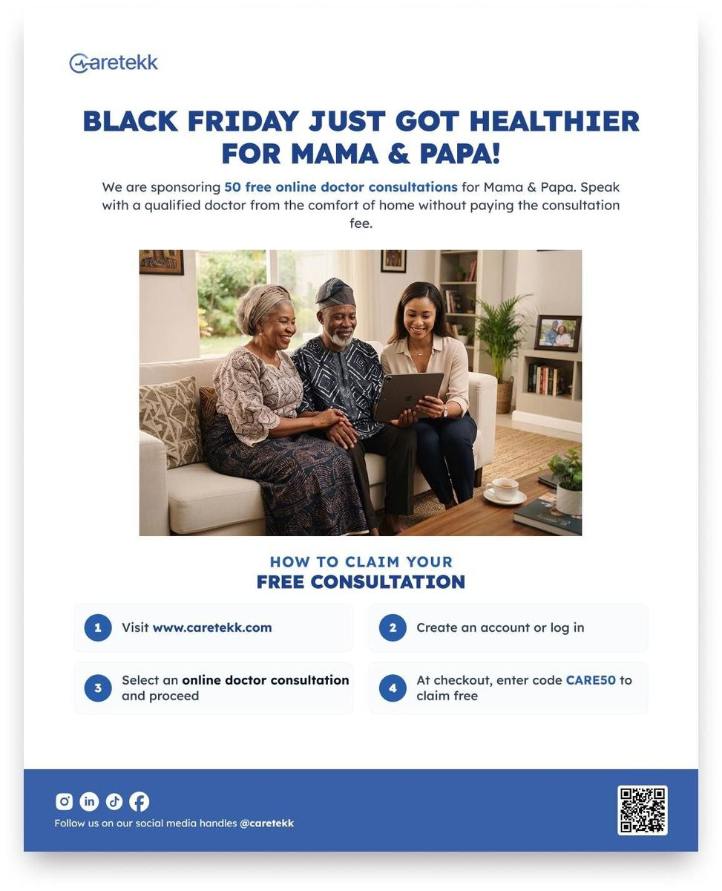
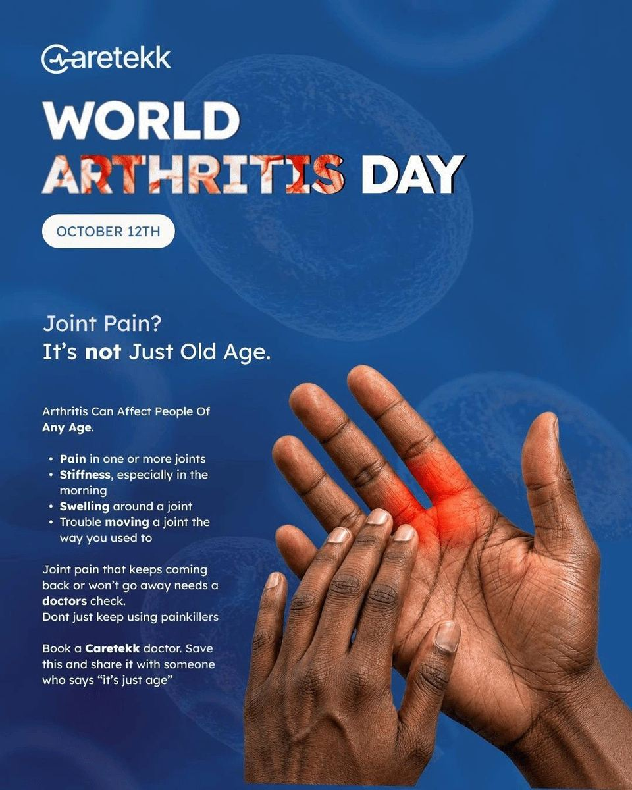
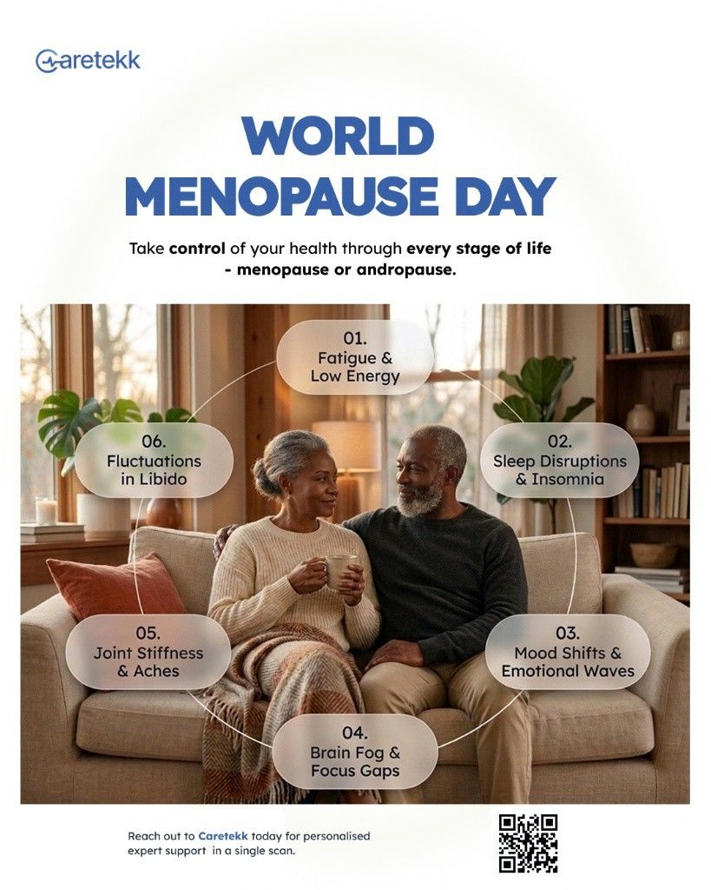
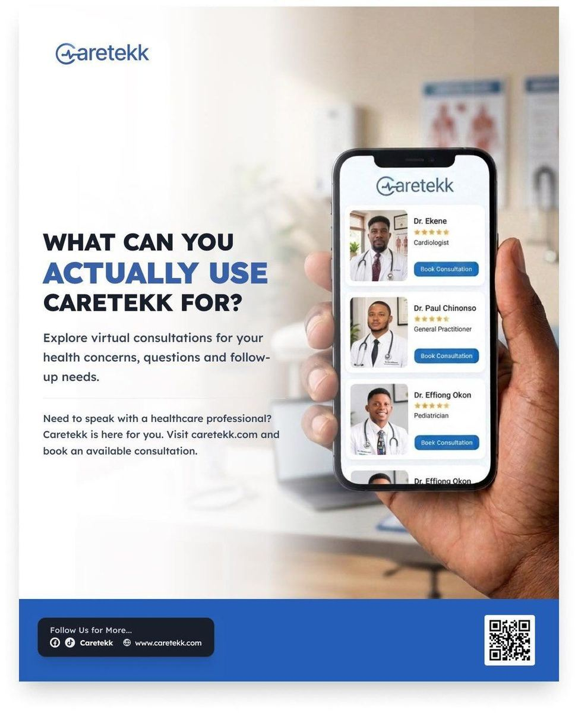

Caretekk Health
Health awareness campaign for a telehealth brand

An ongoing social campaign for Caretekk, a Nigerian telehealth and home-care platform, turning clinical guidance into posts people act on.
The hard part is not the booking flow. It is getting someone to take a symptom seriously in the first place. Ten posts so far, covering three global health days, a Black Friday offer and two reels about care at home.
- Year
- 2026
- Discipline
- Live brand & social design
- Role
- Content design · Campaign art direction · Health communication
- Tools
- Figma · Illustrator · Instagram







10 images · Live brand & social design · 2026